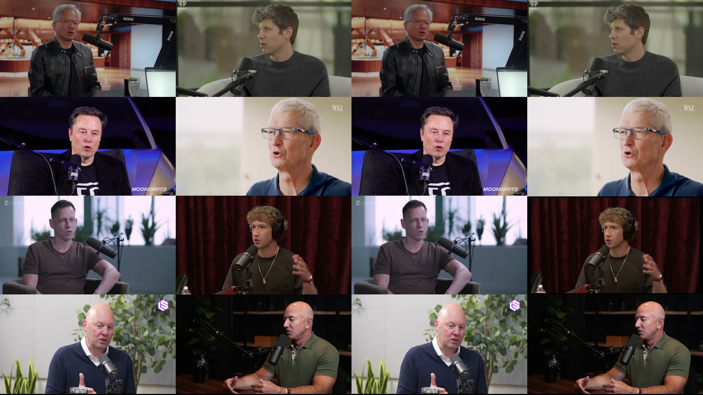

Epistemic Surrender

Synopsis
A satirical deepfake supercut in which cloned tech executives recite a shared script warning about “cognitive security.”
The Liar’s Dividend thrives when we give up on truth discernment. The script is adapted from @orphcorp, who has gone viral multiple times for attributing the same rant about “cognitive security” to unlikely figures. My version uses tech CEOs and venture capitalists to deliver its message, as they are the architects and funders of the adversarial information environment the script warns about. Formally, the repetition and stacking of clips in grids invokes the 2018 Deadspin/Sinclair Broadcasting supercut, an early weaponization of “Fake News” fears that anticipated the Liar’s Dividend.
It circulated widely on social media, and the reactions split in ways that proved its point.
Made for VIS 149, Deepfakes and Synthetic Media (Emily Greenberg), UC San Diego, Spring 2026.
Process and tools
All voices and lip movements are synthetic. None of the people shown said these words.
Voice clones made with ElevenLabs, Parrot AI, VoiceDub and Fish Audio, including my own speech-guided performance for one voice. Lip-synced video made in Runway and composed in Adobe Premiere.
Inspired by Goldstein and Lohn’s Deepfakes, Elections, and Shrinking the Liar’s Dividend, and Bill Posters and Daniel Howe’s Spectre (2019).